@GeoffreyDeSmet
@GeoffreyDeSmet
Presentation instructions
- Press the right arrow key to go to the first real slide
- Press the down arrow key when you reach the desired training section
- Press the escape key for an overview of all slides
Tips:
- Feel free to reuse slides to promote OptaPlanner
- Print to PDF (Google Chrome recommended)
- ODP/PPT/PPTX: Open the PDF in LibreOffice and copy the slides into a new ODP/PPT/PPTX file

Deep Dive Training
by Geoffrey De Smet
OptaPlanner lead
Welcome
- Meet and greet
- Working page (contains all urls):
TODO - Questions: just ask
Agenda: Training
Agenda: Training session 1
- Understanding planning problems
- Quick start: Cloud Balancing
- N queens
- Exhaustive Search
Understanding
planning problems
Lab 0: Exercises on paper
Is manually planning difficult?
Lab0: N Queens
- Place n queens on a n sizes chessboard
- No 2 queens can attack each other

Bad

Good
- Assignment: Solve 8 queens
- Optional 1: Solve 9 queens too
- Optional 2: Solve 8 queens and maximize number of queens that can attack each other as knight
Lab0: TSP Lab
- Connect all 68 dots with 1 tour.
- Circle back to the origin.
- Try to find the shortest tour
- Check the score of your tour:
- Run OptaPlannerExamplesApp
- Button
Traveling Salesman - Button
Import, directorytutorial, filest68.tsp - Right click on your each location in your tour in order
- (Don't left click, that adds a location.)
- To restart, just import the file again.
What is business resource optimization?
TSP demo

Lab: Open the latest Final documentation
- Go to optaplanner.org and click on the big blue button.
Lab: Run the examples in an IDE
- See docs section 1.5.2. Run the examples in an IDE (IntelliJ, Eclipse, NetBeans)
- Optional: build it from source (docs 1.5.4. Build OptaPlanner from source).
- Run the N Queens example in your IDE.
Planning problem use cases
- Agenda scheduling: doctor appointments, court hearings,
maintenance jobs, TV advertisements, ... - Educational timetabling: lectures, exams, conference presentations, ...
- Task assignment: affinity/skill matchmaking for tax audits, wage calc, ...
- Employee shift rostering: nurses, repairmen, help desk, firemen, ...
- Vehicle routing: route trucks, buses, trains, boats, airplanes, ...
- Bin packing: fill containers, trucks, ships, storage warehouses,
cloud computers nodes, prisons, hospitals, ... - Job shop scheduling: assembly lines for cars, furniture, books, ...
- Cutting stock: minimize waste while cutting paper, steel, carpet, ...
- Sport scheduling: football/baseball league, tennis court utilization, ...
- Financial optimization: investment portfolio balance, risk spreading, ...
Vehicle routing
TSP
is an academic problem

What is realistic
business resource optimization?
VRP demo
Assumption: An optimal VRP route uses only 1 vehicle.
Assumption: An optimal VRP route uses only 1 vehicle. (false)
Assumption: An optimal VRP route has no crossing lines.
Assumption: An optimal VRP route has no crossing lines. (false)
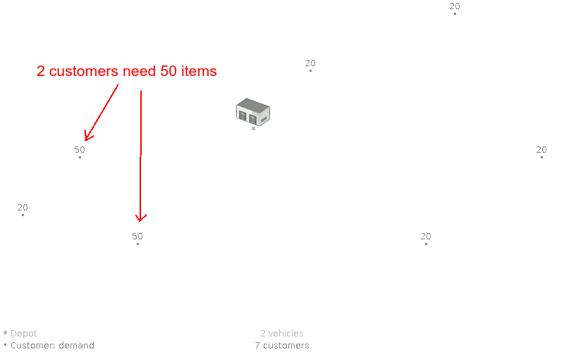 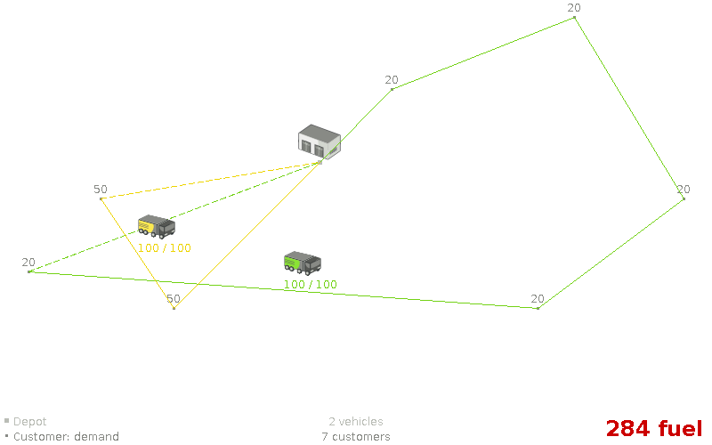Assumption: An optimal, feasible VRP route with n vehicles is still optimal for n+1 vehicles.
Assumption: An optimal, feasible VRP route with n vehicles is still optimal for n+1 vehicles. (false)
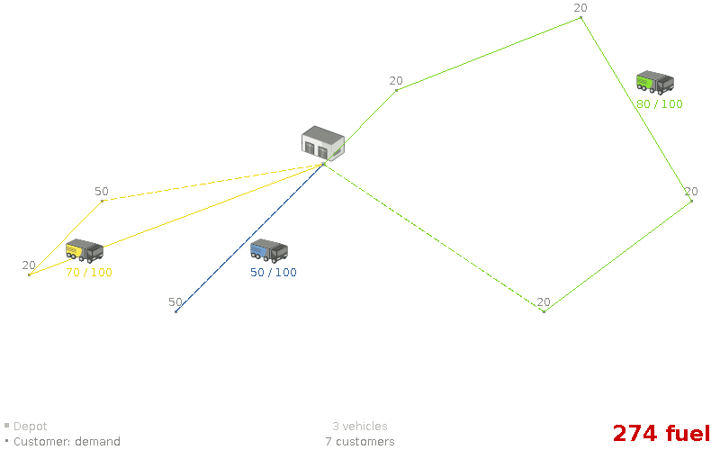Assumption: An optimal VRP route has no crossing lines of the same color.
Assumption: An optimal VRP route has no crossing lines of the same color. (false)
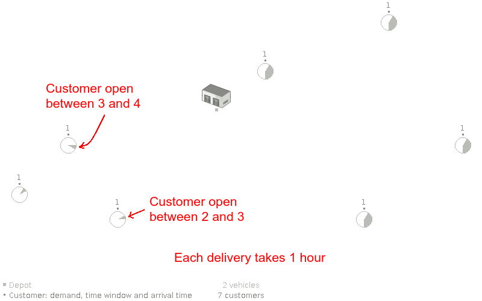 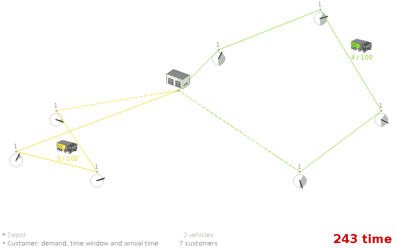Assumption: We can focus on time windows before focusing on capacity (or vice versa).
Assumption: We can focus on time windows before focusing on capacity (or vice versa). (false)
Assumption: Humans optimize VRP optimally.
Assumption: Humans optimize VRP optimally. (false)
Can a manager reasonable judge if this is optimal?
Are planning problems
difficult to solve?
What is business resource optimization?
Cloud Balancing demo

Find optimal solution and scale out
for an NP-complete problem?
⇔ Is P = NP?
- Unresolved since 1971
- 1 000 000 $ reward since 2000
- One of the 7 Millennium Problems
- Most believe P ≠ NP
- ⇔ Impossible to find optimal solution and scale out
- 3000+ known NP-complete problems (wikipedia)

Planning problems are
difficult to solve!
And humans aren't good at it
But they don't realize it
(nor does their manager)
Reuse optimization algorithms
Find better solutions in time and scale out
- Open source
Apache License - Regular releases
Download the zip or from Maven Central - Documented
Reference manual, examples, ... - Quality coverage
Unit, integration and stress tests
Cloud Balancing example
Domain model
Computer
public class Computer {
private int cpuPower;
private int memory;
private int networkBandwidth;
private int cost;
// getters
}Process is a planning entity
@PlanningEntity
public class Process {
private int requiredCpuPower;
private int requiredMemory;
private int requiredNetworkBandwidth;
// getters
...
}Process has a planning variable
@PlanningEntity
public class Process {
...
private Computer computer;
@PlanningVariable(valueRangeProviderRefs = {"computerRange"})
public Computer getComputer() {
return computer;
}
public void setComputer(Computer computer) {
this.computer = computer;
}
}Solution CloudBalance
@PlanningSolution
public class CloudBalance {
private List<Computer> computerList;
private List<Process> processList;
@ValueRangeProvider(id = "computerRange")
@ProblemFactCollectionProperty
public List<Computer> getComputerList() {
return computerList;
}
@PlanningEntityCollectionProperty
public List<Process> getProcessList() {
return processList;
}
...
}Solution CloudBalance: score
@PlanningSolution
public class CloudBalance {
...
private HardSoftScore score;
@PlanningScore
public HardSoftScore getScore() {
return score;
}
public void setScore(HardSoftScore score) {
this.score = score;
}
}Cloud Balancing example
Score constraints
Given 2 solutions
which one is better?
Score calculation
- Easy Java
- Incremental Java
- ConstraintStreams (recommended)
- Drools
Easy Java score calculation
- Easy to implement
- Bridge an existing system
- Slow
public class CloudBalancingEasyScoreCalculator
implements EasyScoreCalculator<CloudBalance> {
public HardSoftScore calculateScore(CloudBalance cb) {
...
return HardSoftScore.valueOf(hardScore, softScore);
}
}Incremental Java score calculation
- Fast
- Solution changes ⇒ recalculate score delta only
- Hard to implement
- Much boilerplate code
 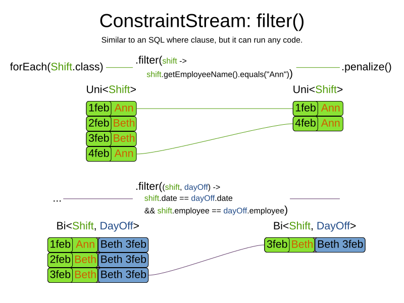
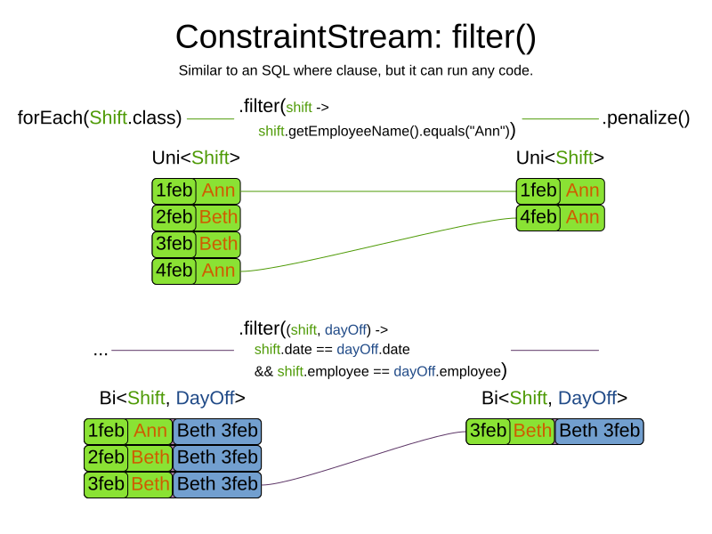
 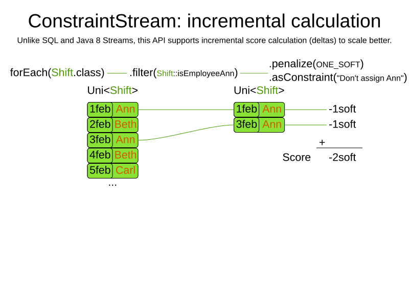
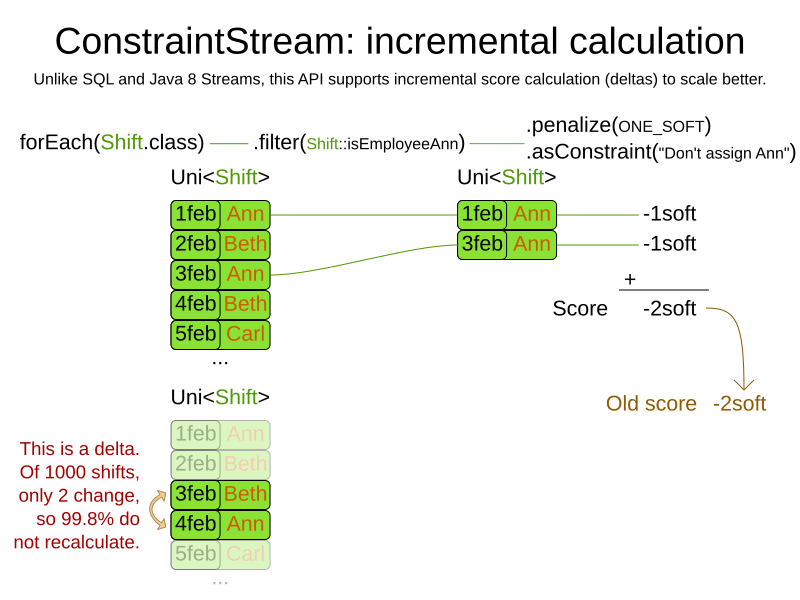
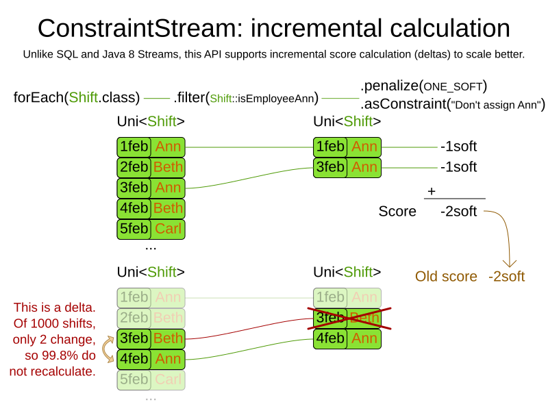
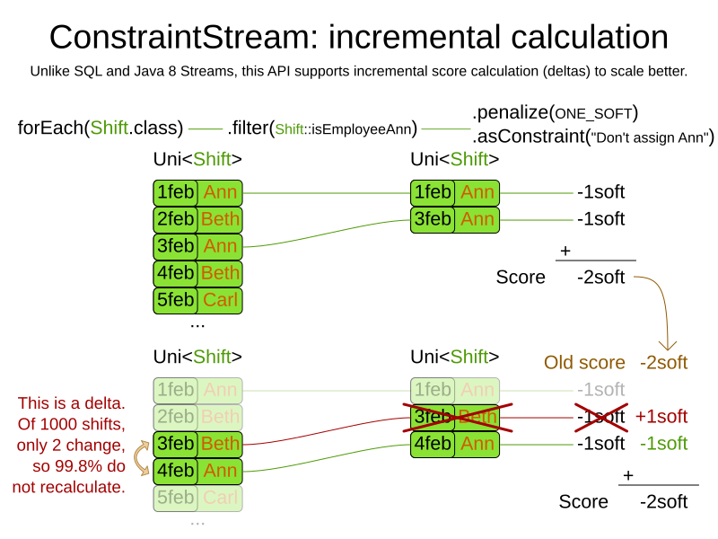
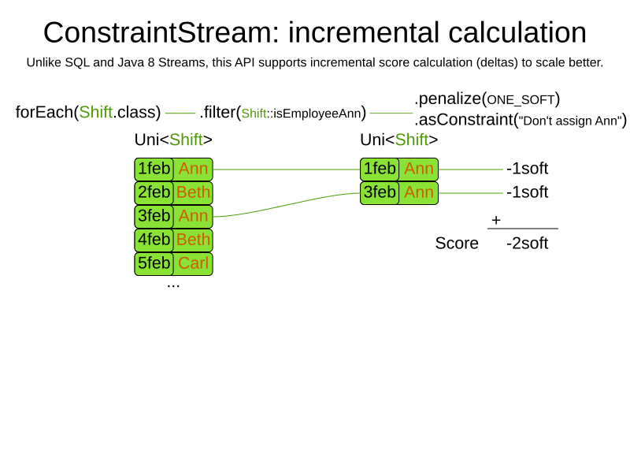
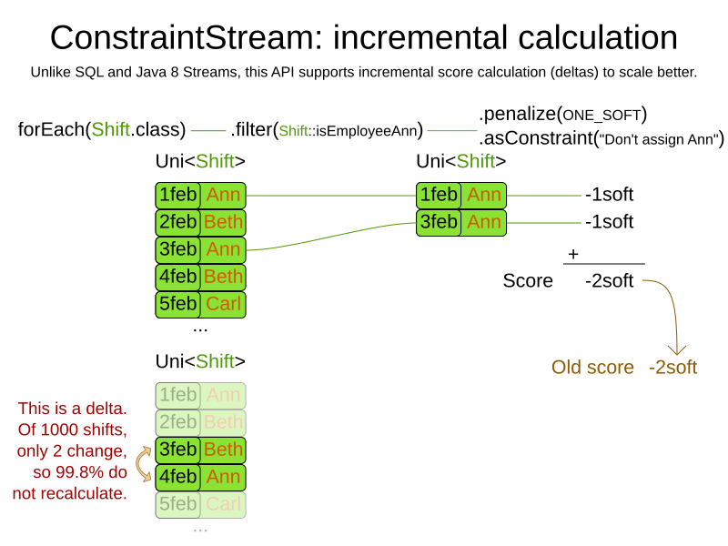
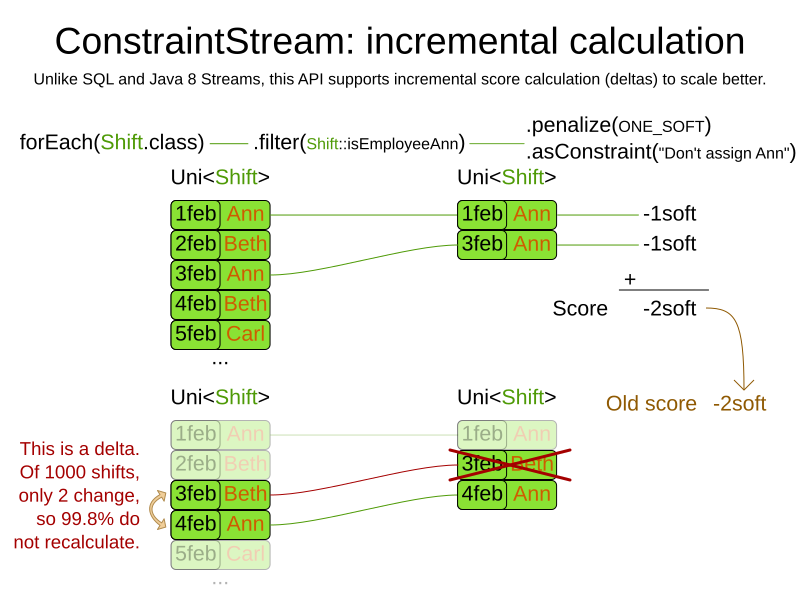
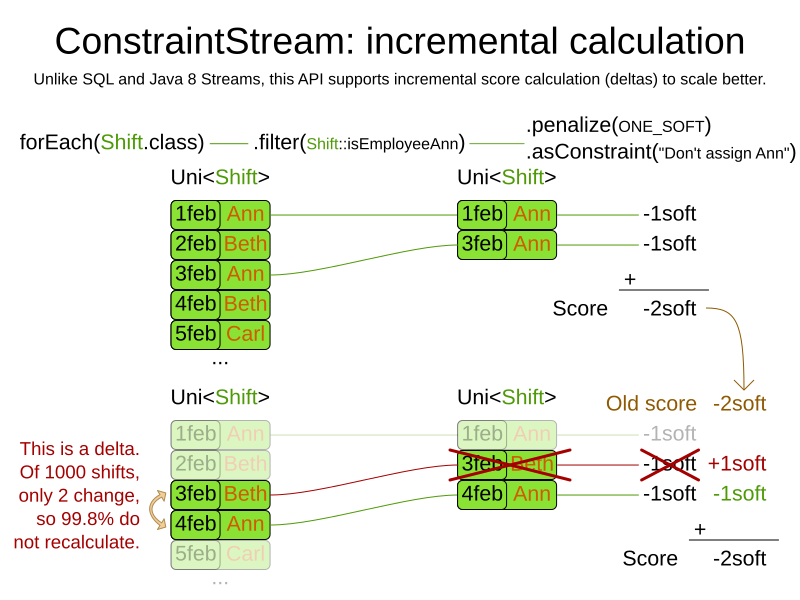

 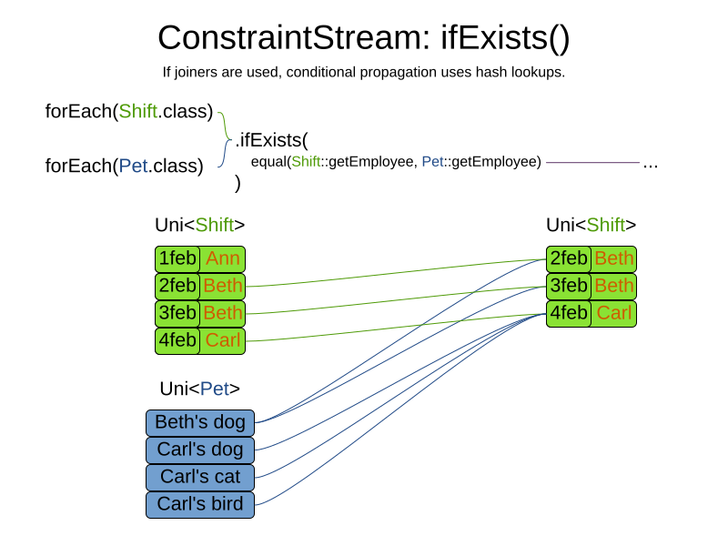
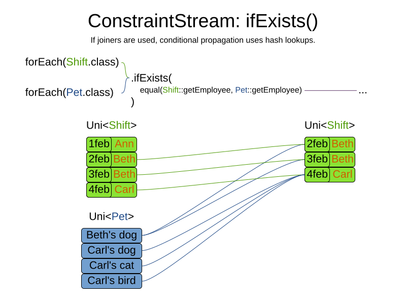
Drools score calculation
- Incremental
- No boilerplate code
- Constraints in Drools Rule Language (DRL)
- Declarative (like SQL, regular expression)
- Integration opportunities
- Drools Workbench
- Decision tables
Drools score calculation: facts
- Facts in DRL loaded from
@ProblemFact(Collection)Property@PlanningEntity(Collection)Property
DRL soft constraint: computer cost
rule "computerCost"
when
// there is a computer
$s : Computer($c : cost)
// there is a processes on that computer
exists Process(computer == $s)
then
// lower soft score by the maintenance cost
scoreHolder.addSoftConstraintMatch(kcontext, - $c);
endDRL hard constraint: CPU power
rule "requiredCpuPowerTotal"
when
// there is a computer
$s : Computer($cpu : cpuPower)
// with too little cpu for its processes
accumulate(
Process(computer == $s, $requiredCpu : requiredCpuPower);
$total : sum($requiredCpu);
$total > $cpu
)
then
// lower hard score by the excessive CPU usage
scoreHolder.addHardConstraintMatch(kcontext,
$cpu - $total);
endScore calculation must be flexible
- Optimal solution for almost your business problem is useless
-
Model supports:
- Reusing existing classes
- Rich, OO class hierarchies (including polymorphism)
-
Constraints supports:
- Any constraint (no linear or quadratic restrictions!)
- Reusing existing code
-
Scoring supports:
- Positive/negative mix
- Score weights
- Unlimited score levels
Cloud Balancing example
Solving it
Solver configuration by XML
<solver>
<solutionClass>...CloudBalance</solutionClass>
<entityClass>...Process</entityClass>
<scoreDirectorFactory>
<scoreDrl>...Constraints.drl</scoreDrl>
</scoreDirectorFactory>
<!-- optimization algorithms are optional -->
</solver>Solving
SolverFactory<CloudBalance> factory
= SolverFactory.createFromXmlResource("...SolverConfig.xml");
Solver<CloudBalance> solver = factory.buildSolver();
CloudBalance problem = ... // Load problem
CloudBalance solution = solver.solve(problem);Lab901: Win US election with least votes
- Game the system: gamer candidate should win election
- Gamer candidate should have as little votes as possible
- Decide winning candidate per federal state
- Everyone votes
- There are no 3rd party candidates
- Get half of votes plus one for a state to win all its electoral votes
Lab: Switch score calculation type
- Edit Cloud Balancing's solver configuration xml
- Switch to Easy Java Score calculation
- Switch to Incremental Java Score calculation
- Let them run each parallel windows.
- What happens if the dataset size increases?
CB code overview
In IDE
Lab: Computer 0 bans memory-hungry processes
- Computer 0 violates 1 hard constraint per process that requires more than 3GB RAM memory
- Implement first in Easy Java Score Calculation
- Optional: Then in Drools DRL
- Optional: Then in Incremental Java Score Calculation
N Queens
N Queens demo
demo
N Queens
- Imperfect example
- Not NP-complete (shortcuts exist)
- Score function is too simple (too black and white)
What solution is better?
- Need for objective scoring
- Better score ⇔ better solution
- Highest score ⇔ optimal solution
N Queens
- Hard constraints:
- -1 for every pair of conflicting queens
- Soft constraints:
- None
Score = -2
Conflicts: A-B, B-D
Score = 0
No conflicts
How do we find the best solution?
- Need for optimization algorithms
- Best solution in available time
Lab: Reward knight attacks
- Use N Queens example
- Remove termination on bestScoreLimit.
- For every pair of queens that can knight attack each other: +1 score
- Implement with Drools score calculation
- Optional: implement Easy Java Score calculation too
- Optional: implement Incremental Java Score calculation too
Exhaustive Search

How many combinations for 100 queens?
- 1 queen per column
- 100 queens ⇒ 100 variables
- 100 rows ⇒ 100 values per variable
Source: NASA (wikipedia)
> humans?
7 000 000 000
How many combinations for 100 queens?
- 1 queen per column
- 100 queens ⇒ 100 variables
- 100 rows ⇒ 100 values per variable
Source: NASA and ESA (wikipedia)
> minimum atoms
in the observable universe?
1080
How many combinations for 100 queens?
- 1 queen per column
- 100 queens ⇒ 100 variables
- 100 rows ⇒ 100 values per variable
100100 = 10200
1 0000000000 0000000000 0000000000 0000000000 0000000000
0000000000 0000000000 0000000000 0000000000 0000000000
0000000000 0000000000 0000000000 0000000000 0000000000
0000000000 0000000000 0000000000 0000000000 0000000000
How many combinations for n queens?
- 1 queen per column
- n queens ⇒ n variables
- n rows ⇒ n values per variable
nn
|valueSet||variableSet|
How long?
Presume 109 scores/ms ⇒ 1020 scores/year
| Queens | Combinations | Calculation time |
|---|---|---|
| 100 | 100100 = 10200 | 10180 years |
| 1000 | 10001000 = 103000 | 102980 years |
| 10000 | 1000010000 = 1040000 | 1039980 years |

Moore's law == a drop in the ocean
Brute Force scalability
8 queens = 15.7 seconds
9 queens = 2.5 minutes (times 10)
10 queens = 0.83 hours (times 20)
Lab: Try Brute Force
<solver>
...
<exhaustiveSearch>
<exhaustiveSearchType>BRUTE_FORCE</exhaustiveSearchType>
</exhaustiveSearch>
</solver>Brute force scalability
Plan 1200 processes with brute force?
Branch And Bound
Branch And Bound configuration
nodeExplorationTypeentitySorterMannervalueSorterManner
Lab: Try Branch And Bound
<solver>
...
<exhaustiveSearch>
<exhaustiveSearchType>BRANCH_AND_BOUND</exhaustiveSearchType>
</exhaustiveSearch>
</solver>- Optional: Try a different
nodeExplorationType
Exhaustive Search doesn't scale
- Branches explode exponentially
- Not enough CPU
- Not enough memory
Agenda: Training session 2
- Domain modelling
- Employee rostering
- Curriculum course timetabling
- Exam timetabling
- Score calculation advanced
- Tennis club scheduling
- Overconstrained planning
- Hospital bed planning
- Methodology
- Drools integration
- Dinner party
Domain modelling
Terminology
- Problem fact
- Planning entity class: Process
- Planning entity: Process-7
- Planning variable: Process.getComputer()
- Planning value: Computer-3
- Planning value range: from Computer-0 to Computer-8
What changes during planning?
- Which class is a planning entity?
- Which property is a planning variable?


Training lab2* exercises
The stage acting camp problem
The cinema room cleanup problem
The Court hearing problem
The Magistrate timetable problem
The credit card budget problem
The tax audit task assignment problem
- Audit priority
- Audit size
- Auditor skill (= qualified)
- Auditor affinity (= work faster)
- Auditor full-time / part-time
ValueRangeProvider
- From Solution
- From Entity
ValueRangeProvider
- Returns Collection
- Returns ValueRange
Planning clone

Working solution vs Best solution
- Working solution is internal!
- Best solution is given to you through
SolverEventListener
Curriculum course timetabling
Teacher, Course, Room
class Teacher {
...
}class Course {
Teacher teacher;
...
}class Period {
...
}class Room {
...
}Lecture
@PlanningEntity
class Lecture {
Course course;
int lectureIndexInCourse;
@PlanningVariable(...) Period period;
@PlanningVariable(...) Room room;
...
}Lab: Unavailable period penalty
- On curriculum course scheduling example
- Add data: which course is unavailable during which period
- Add constraint
With Java
class UnavailablePeriodPenalty {
Course course;
Period period;
...
}public HardSoftScore calculateScore(Schedule schedule);
int hardScore = 0;
for (UnavailablePeriodPenalty penalty : schedule.getPenaltyList()) {
for (Lecture lecture : schedule.getLectureList()) {
if (penalty.getCourse() == lecture.getCourse()
&& penalty.getPeriod() == lecture.getPeriod()) {
hardScore--;
}
}
}
...
return HardSoftScore.valueOf(hardScore, softScore);
}With Drools rule engine
class UnavailablePeriodPenalty {
Course course;
Period period;
...
}rule "unavailablePeriodPenalty"
when
// When a course is unavailable for a certain period ...
UnavailablePeriodPenalty($c : course, $p : period)
// ... and a lecture of that course is scheduled in that period ...
Lecture(course == $c, period == $p)
then
// ... then we lose 1 hard score point
scoreHolder.addHardConstraintMatch(kcontext, -1);
endExplaining the score

Heat map
Course scheduling demo
Employee rostering

Lab901: Facility Location Problem
- # stores at different location
- Each store has a demand
- # potential warehouses
- Each warehouse has a capacity and setup cost
- Each store gets supplied by 1 warehouse
- Distance between store and warehouse is also a cost
- Decide which warehouses to buy
Score calculation advanced
Mirror principle
- -1 for every pair of queens that can attack each other
- +1 for every pair of queens that cannot attack each other
- ⇒ Same optimal solution
- Different
initializingScoreTrend - ⇒ possibly different performance
- Default to negative constraints (if it feels natural)
 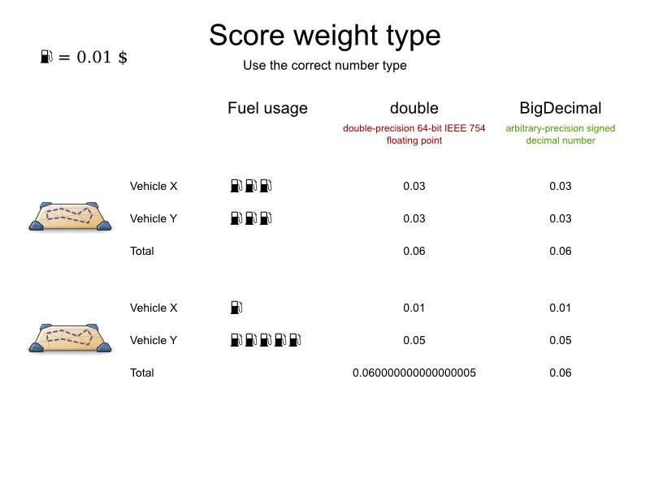
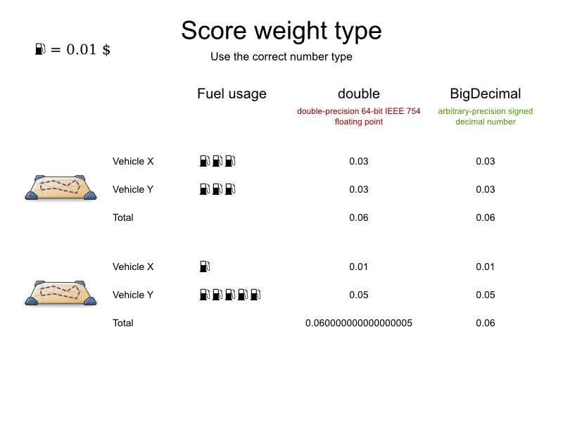


Bendable score
- Any number of score levels
- Decide at bootstrap time


Reuse existing business code
public class Nurse {
private Country country;
public boolean isHoliday(Date date) {
if (country == Country.BE) {
// true if date is 1-JAN, easter monday, 21-JUL, ...
} else if (country == Country.FR) {
// true if date is 1-JAN, easter monday, 14-JUL, ...
} else if (...) {
...
}
...
}
}Training lab1*
Do we need to implement all constraints?
Fairness/load balancing

Lab: load balancing
- Apply load balancing on FLP
- Remove setupCost and normal distanceCost
- Warehouse capacity hard constraint still applies!
- Optional: load balance relative to warehouse capacity
- Optional: use the distanceCost as the load in loading balancing
Tennis club scheduling
Demo
ConstraintConfiguration

Exam timetabling
Demo
Overconstrained planning
Overconstrained planning
- @PlanningVariable(nullable=true)
- Extra score level
- Feasible > Assigned > Cheap
Hospital bed planning
Demo
Lab: overconstrained FLP
- Multiple all demands by 10
- Solve it but don't break hard constraints
Methodology
Config objects
- Programmatic configuration
- No XSD yet
Termination
- Normal termination types
- Asynchronous termination from another thread
Lab: programmatic configuration
- Change code in
CloudBalancingApp.createSolver() - Ask termination time with
String s = JOptionPane.showInputDialog(
null, "How many seconds?", "");
Drools integration
ScoreDirectorFactoryConfig
- setKieBase(...)
Dinner party
Demo
Conference scheduling
Demo


Task assigning
Demo


Agenda: Training session 3
- Logging and scopes
- Benchmarker
- Construction Heuristics
- Community
Logging
Reproducibility is gold
- Debugging
- Support
- Demos
- Your sanity
Reproducibility pitfalls
Randomcalls that don't use the seededRandomHashMapin Solution => UseLinkedHashMapHashSetin Solution => UseLinkedHashSet- Time gradient algorithms (Simulated Annealing)
- Work stealing (
EnvironmentMode)
Logging levels
What is the solver doing?


Lab: Logging
- Change
logback.xml - Try
info,debugandtrace - Optional: open system monitor. What do you see?
- Optional: open VisualVM. What do you see?
OptaPlanner hogs a CPU core
- No IO. OptaPlanner is not a webserver!
⇒ Multithreading gain is lower. - Multithreaded solving is available now (to hog all your CPU cores)
⇔ it does not break incremental score calculation - Memory is stable (except for Exhaustive Search)
Score calculation speed
- How many inner iterations per second?
- < 1000 ⇒ Too slow!
- > 10000 ⇒ OK
Lab: Score calculation speed
- Comment out constraints
- How does the speed change?
- Which constraint is the slowest? Is there a bottleneck?
What is the best optimization algorithm?
Optimization algorithms
-
Exhaustive Search
- Brute Force
- Branch And Bound
-
Construction Heuristics
- First Fit (Decreasing)
- Weakest/Strongest Fit (Decreasing)
- Cheapest Insertion
-
Metaheuristics (Local Search, ...)
- Hill Climbing
- Tabu Search
- Strategic Oscillation Tabu Search
- Simulated Annealing
- Late Acceptance
- Step Counting Hill Climbing
Too much choice
Which one do I need to use?
Good answer: First Fit Decreasing with Late Acceptance
Better answer: try them all and use the best one
Benchmarker

Benchmarker report
Demo and statistics overview
Summary statistics
- Always generated
- Only covers the end state
Problem statistics
- Per problem dataset
- Not generated by default
- Impact execution (observer effect)
- Covers state during solving too
- Available as CSV file


Single statistics
- Per problem dataset and solver configuration
- Not generated by default
- Impact execution (observer effect)
- Covers state during solving too
- Available as CSV file
Benchmarker pitfalls
- JVM warm up
- Parallel benchmarking
Lab Benchmarker
- On Cloud Balancing
- Compare Brute Force with Branch And Bound
- Or different score directors
- Use 30 second termination
Blueprints
Demo
Matrix benchmarking
Demo
Benchmark aggregator

Lab BenchmarkAggregator
- Run the same benchmark twice
- With different log levels or JDK
- Aggregate report
Construction Heuristics

First Fit config
<solver>
...
<constructionHeuristic>
<constructionHeuristicType>FIRST_FIT</constructionHeuristicType>
</constructionHeuristic>
</solver>First Fit scalability
First Fit results
All hard constraints satisfied: maintenance cost shown

First Fit Decreasing config
<solver>
...
<constructionHeuristic>
<constructionHeuristicType>FIRST_FIT_DECREASING</constructionHeuristicType>
</constructionHeuristic>
</solver>DifficultyComparator
public class ProcessDifficultyComparator
implements Comparator<Process> {
public int compare(Process a, Process b) {
// Compare on requiredCpuPower * requiredMemory
// * requiredNetworkBandwidth
}
}
@PlanningEntity(difficultyComparatorClass
= ProcessDifficultyComparator.class)
public class Process {
...
}First Fit Decreasing scalability
First Fit Decreasing results
Weakest Fit (Decreasing)
Strongest Fit (Decreasing)
Cheapest insertion
Regret insertion
Not yet supported
Scaling Construction Heuristics
If the Construction Heuristic takes too long, Local Search has too little time

Community
Build from source
$ git clone https://github.com/kiegroup/optaplanner.git
...
$ cd optaplanner
$ mvn clean install -DskipTests
...
$ cd optaplanner-examples
$ mvn exec:java
...Community publicity
- Speaking at an event?
- Wrote a public article or case study?
- Made a video?
Add it on optaplanner.org
How? By sending a Pull Request to add it in the yml file (or just mail me).
Steal these slides
- Most slides are images of
800*600 - SVG sources are in
https://github.com/kiegroup/optaplanner/tree/main/optaplanner-docs/src/modules/ROOT/images - Use Inkscape
- Use Tango color palette
- User layers to export a subset
- Demos: see videos
Anyone want to convert to odp/ppt and share?

OptaPlanner HUB
Agenda: Training session 4
- Local Search
- Score traps
- Move selectors
- Custom moves
- Incremental score calculation
- Machine Reassignment
- Assertion modes
Local Search
Construction Heuristics + Local Search
<solver>
...
<constructionHeuristic>
<constructionHeuristicType>FIRST_FIT_DECREASING</constructionHeuristicType>
</constructionHeuristic>
<localSearch>
...
<localSearch>
</solver>Move types
- Change move
- Swap move
- ...
All change moves
| n | # moves | # solutions |
|---|---|---|
| 4 | 16 | 256 |
| 8 | 64 | 16777216 |
| 64 | 4096 | 10116 |
| n | n2 | nn |
Multiple moves

Multiple moves can reach any solution


Making moves
Making steps

Hill Climbing config
<localSearch>
<forager>
<!-- Untweaked standard value -->
<acceptedCountLimit>1000</acceptedCountLimit>
</forager>
</localSearch>Lab Hill Climbing
Tabu Search config
<localSearch>
<acceptor>
<!-- Typical standard value -->
<entityTabuSize>7</entityTabuSize>
</acceptor>
<forager>
<!-- Typical value -->
<acceptedCountLimit>1000</acceptedCountLimit>
</forager>
</localSearch>Lab Tabu Search
Simulated Annealing config
<localSearch>
<acceptor>
<!-- Tweaked value -->
<simulatedAnnealingStartingTemperature>
0hard/400soft
</simulatedAnnealingStartingTemperature>
</acceptor>
<forager>
<!-- Typical value -->
<acceptedCountLimit>4</acceptedCountLimit>
</forager>
</localSearch>Lab Simulated Annealing
Late Acceptance config
<localSearch>
<acceptor>
<!-- Typical standard value -->
<lateAcceptanceSize>400</lateAcceptanceSize>
</acceptor>
<forager>
<!-- Typical value -->
<acceptedCountLimit>4</acceptedCountLimit>
</forager>
</localSearch>Lab Late Acceptance
Local Search results
Cost ($) reduction
Optimization algorithms
-
Exhaustive Search
- Brute Force
- Branch And Bound
-
Construction Heuristics
- First Fit (Decreasing)
- Weakest/Strongest Fit (Decreasing)
- Cheapest Insertion
-
Metaheuristics (Local Search, ...)
- Hill Climbing
- Tabu Search
- Strategic Oscillation Tabu Search
- Simulated Annealing
- Late Acceptance
- Step Counting Hill Climbing
Score traps

Move selectors


Cartesian Product


Mimic Selection
Limited Selection
Generic moves

TailChainSwapMove
SubChainChangeMove
SubChainSwapMove
Custom moves
Incremental score calculation


EnvironmentMode
Are there bugs in my code?
- Non-reproducible
- Reproducible (default)
- Fast assert
- Full assert
Machine Reassignment


Agenda: Training session 5
- Chained variables
- TSP, VRP
- Nearby selection
- Shadow variables
- Project Job Scheduling
Chained variables

TSP
Nearby Selection
Scaling out with TSP and VRP


Shadow variables

VRP
OpenStreetMap and Google Maps


Project Job Scheduling

Planning agility
"Plans are of little importance,
but planning is essential."
Winston Churchill
(Prime Minister UK 1940-1945)
"Everybody has a plan
until they get punched
in the mouth…"
Mike Tyson
(Boxer, heavyweight champion 1987-1990)
What kind of planning disruptions?
- Local disruption
- Impact limited to one department/region
- Global disruption
- Impact across the board
Local disruption
Global disruptions
- 2001 - September 11 attacks
- Air-traffic shut-down in North America for 2 days
- 2010 - Eyjafjallajökull volcano eruption
- Air-traffic shut-down in Europe for 8 days
- 2020 - COVID-19
- Flight cancellations
Planning agility paradox
"We can not automate planning
because the plans will change."
⇒
"We need to automate (re)planning
because the plans will change."
But how?
1) What is your
publication deadline?
Publication
- Tell employees when/how/where to work
- Publication deadline
- Technician routing: 1 hour before departure
- School timetabling: before end of vacation
- Guards: 4 weeks before shift
- Nurses: 6 weeks before shift
- Facility location: 6 months before opening


Multi-stage planning
- Strategic: expand the maternity ward?
- Tactical: hire a respiratory specialist?
- Operational: assign a Monday shift to Ann?
Each planning stage feeds into the next.
Especially for trains, airplanes, etc
- Strategic: add a stop in Philadelphia?
- Tactical: depart at 7 AM?
- Operational: Which locomotive and wagons?
Conway's law
"Any organization that designs a (software) system
will produce a design whose structure
is a copy of the organization's communication structure."
⇒
Planning problems solved by different groups
should use different Solver instances
(during the first year in production).
In practice
@Path("/trainWagon")
public class TrainWagonDeciderResource {
@Inject
SolverManager<TrainWagonSolution, ...> wagonSolverManager;
... wagonSolverManager.solve(...)
}
@Path("/trainPlatform")
public class TrainPlatformDeciderResource {
@Inject
SolverManager<TrainCrewSolution, ...> platformSolverManager;
// Uses TrainWagonSolution's output as problem facts:
// Length of train impacts eligble platforms
... platformSolverManager.solve(...)
}2) Do you assign to time?
No, domain lacks time data
No java.time import
Yes, Domain has time
but planning does not assign time
import java.time.LocalDate;
@PlanningEntity
public class Patient {
private String name;
private LocalDate arrivalDate;
private LocalDate departureDate;
...
@PlanningVariable(...)
private Bed bed;
...
}Hospital bed planning does not change
a patient's arrival or departure date.
By the way...
Don't use java.util.Date for time manipulation.
It's like asking your bartender how to treat cancer.
Don't use java.util.Calender either,
It's like asking your dog how to treat cancer.
Use java.time.LocalDate
or java.time.LocalDateTime instead!
Yes, Domain has time
and planning assigns to time
Pick a good domain model.
Planning assigns to time
@PlanningEntity
public class Lesson {
private String subject;
...
@PlanningVariable(...)
private Timeslot timeslot;
...
}
import java.time.DayOfWeek;
import java.time.LocalTime;
public class Timeslot {
private DayOfWeek dayOfWeek;
private LocalTime startTime;
private LocalTime endTime;
...
}
3) Do you replan
every week, day or hour?
Continuous planning
What is continuous planning?
Don't change history
@Entity
public class Shift {
private LocalDateTime start;
private LocalDateTime end;
@PlanningPin
private boolean history;
...
@PlanningVariable(...)
private Employee employee;
...
}Don't change published shifts?
@PlanningEntity
public class Shift {
private LocalDateTime start;
private LocalDateTime end;
@PlanningPin
// every historic shift is published
private boolean published;
...
@PlanningVariable(...)
private Employee employee;
...
}Maybe
How to paint yourself in a corner
Assign all respiratory specialists
to the last shift of your planning window
(even in other wards as normal nurses).
⇒
draft length >= 2 * publish length
Continuous planning
- Publish notice ranges from long to short
- Weeks: employee shift rostering, pharmacy on duty scheduling, ...
- Seconds: runway scheduling, gate scheduling, platform scheduling, ...
- Domain must contain dates or timestamps data
- So domain probably has
import java.time - Regardless if planning assigns to time or not.
- So domain probably has
- Planning windows must overlap
- ⇒ School timetabling is not continuous planning
4) Will published plan change?
Non-disruptive Replanning
Implementation
@PlanningEntity
public class Talk {
private Timeslot publishedTimeslot;
...
@PlanningVariable(...)
private Timeslot timeslot;
} Constraint publishedTimeslot(ConstraintFactory f) {
return f.from(Talk.class)
.filter(talk -> talk.getPublishedTimeslot() != null
&& talk.getTimeslot()
!= talk.getPublishedTimeslot())
.penalize(PUBLISHED_TIMESLOT,
HardMediumSoft.ONE_MEDIUM);
}Non-disruptive Replanning
- Medium penalty: disrupt only to become feasible
- Timeslot in conference scheduling
- Soft penalty: disrupt if gain is higher than a threshold
- Room in conference scheduling
5) Does your problem
change every few (milli)seconds?
Real-time planning
Real-time planning
DEMO
Real-time planning
solver.addProblemFactChange(...)- Daemon mode
- Don't waste CPU time at night and during breaks
7) Do you have
a resource shortage?
Overconstrained planning
Overconstrained planning
- Nullable
@PlanningVariable(nullable = true)- medium constraint penalizes unassigned entities
- Virtual resources
- Add virtual resources to the input problem
class Employee { boolean virtual; } - Soft constraint penalizes cost of virtual resources
- Add virtual resources to the input problem
8) Do you fear
a worst case scenario?
Backup planning
- Don't make your plan a house of cards
- Add constraints to penalize such plans
Summary
Know your toolbox
- Multi-stage planning
- Continuous planning
- Non-disruptive replanning
- Real-time planning
- Overconstrained planning
- Backup planning
Combine them as needed.
Agenda: Training session 6
- Repeated planning
- Integration
- Clustering
- Multitenancy
- Competition
Repeated planning
- Backup planning
- Continuous planning
- Real-time planning
Backup planning
Not really repeated planning, but score calculation
- Reserve assignments
- Balancing remaining space
- Train/flight layovers
Continuous planning
Plan until the end of time?
Continuous planning demo
Nurse rostering demo
Immovable entities
- Move
Filterthat is always applied
Non-disruptive repeated planning
AKA semi-movable entities
Real-time planning
When you need an answer in milliseconds
ProblemFactChange
- Callback that is executed on the solver thread
Lab: real-time planning
- Delete a warehouse
- How long to become initialized and feasible again?
- Optional: click to add a store
Daemon mode
- Start with an empty problem
- All problem facts come in through a ProblemFactChange
- Configure no termination
solve()does not return ...- ... until
terminateEarly()is called
Integration
Reference architecture
- OptaWeb examples
- OptaConf
Camel OptaPlanner
- http://camel.apache.org/optaplanner.html
- Unit tested
- Works on Karaf too
JBoss modules
- Do It Yourself (see docs)
OSGi
- Engine jars support it
Android
- Works (use documented workaround)
- Demo
Humans planners and politics
The easiest ways to fail (or win) a project...
Who will win a quiz?
- Very smart, experienced quizmaster without internet access
- Smart teenager with internet access
OptaPlanner enhances the human planner
Business is king
- The human planner defines the score function
- The human planner is your best friend! You need him/her.
- The human planner validates the score function
- business will change ⇒ the score function will change too
- The human planner redefines the score function in the future.
Who's in control?
The user is in control
Course scheduling demo
Who's in control?
- The human planner outranks OptaPlanner
- Use immovable entities again
Multiple threads

Multithreaded solving
<solver>
<moveThreadCount>4</moveThreadCount>
...
</solver>Also supported: AUTO, NONE
Clusters
Partitioning

Partitioning
- Sign of weakness
- Might be the only solution
Multitenancy

Competition
See OptaPlanner HUB
Competing solvers
- In-house solvers
- IBM CPLEX
- Gurobi
- LocalSolver
- Quintiq
- AIMMS
- Choco (open source)
- OscaR (open source)
- JSprit (open source)
Not your father's constraint solver
CPLEX
IloNumVar[] expense = cplex.numVarArray(2, lb, ub);
cplex.addLe(cplex.sum(
cplex.prod(1.06, expense[0]), // Euro
cplex.prod(1.24, expense[1])), // British Pound
50.0);OptaPlanner
rule "50 Dollar limit"
when
Expense(1.06 * euroCost + 1.24 * britishPoundCost > 50 )
then
scoreHolder.addHardConstraintMatch(kcontext, -1);
endAgenda: Training session 7
- Full exercise
- Debugging
- Support FAQ
Debugging
Support FAQ
Agenda: Training session 8
- KieContainer and kjars
- Optaplanner Workbench
- OptaPlanner Execution Server
KieContainer and kjars
KieContainer support: classpath container
SolverFactory<CloudSolution> solverFactory
= SolverFactory.createFromKieContainerXmlResource(
"opta/optacloud/cloudSolverConfig.solver.xml");
// For every dataset
Solver<CloudSolution> solver = solverFactory.buildSolver();
CloudBalance problem = ... // Load problem
CloudSolution solution = solver.solve(problem);optacloud-1.0.0.jar is in the classpath
KieContainer support: from Maven repo
KieServices kieServices = KieServices.Factory.get();
SolverFactory<Object> solverFactory
= SolverFactory.createFromKieContainerXmlResource(
kieServices.newReleaseId("opta", "optacloud", "1.0.0"),
"opta/optacloud/cloudSolverConfig.solver.xml");
// For every dataset
Solver<Object> solver = solverFactory.buildSolver();
CloudBalance problem = ... // Load problem
Object solution = solver.solve(problem);
optacloud-1.0.0.jar is not in the classpath
Downloaded from a Maven repository
Kmodule support
kmodule.xml
<kmodule xmlns="https://www.drools.org/xsd/kmodule">
<kbase packages="opta.optacloud">
<ksession name="cloudKsession"/>
</kbase>
</kmodule>cloudSolverConfig.solver.xml
<solver>
<scanAnnotatedClasses/>
<scoreDirectorFactory>
<ksessionName>cloudKsession</ksessionName>
</scoreDirectorFactory>
</solver>Kmodule support (defaulted)
kmodule.xml
<kmodule xmlns="https://www.drools.org/xsd/kmodule"/>cloudSolverConfig.solver.xml
<solver>
<scanAnnotatedClasses/>
</solver>Summary
- OptaPlanner solves planning and scheduling problems
- Adding constraints: easy and scalable
- Switching/combining optimization algorithms: easy
Q & A
| Homepage | www.optaplanner.org |
|---|---|
| Slides | www.optaplanner.org/learn/slides.html |
| User guide | www.optaplanner.org/learn/documentation.html |
| Feedback |  @GeoffreyDeSmet @GeoffreyDeSmet |